Systems Engineering Management Plan for PT Matahari
Dong Myeong Seo
PT Matahari distributes paint and paint product in Malang Indonesia. Recent years the demand for paint has been soared because of the available income continues to the uptrend in private sectors. And local government enforce the owners of all commercial buildings to paint the exterior of buildings every five years. On the other hand, PT Matahari runs a business using primitive bookkeeping to record the daily transactions. This old technology is unable to meet customer’s expectation, let alone it is impossible to plan and forecast the future demand effectively and efficiently. Hence, it is high time for PT Matahari to implement a effective and efficient software system not to lose out competition and take bigger market share with real-time inventory management, quicker fulfillment of orders, and timely demand and supply planning.
Here we implement a light Enterprise Resource Planning (ERP) software for PT Matahari. This system enables Real-time inventory management; Pricing policy to award loyal customers; Easy to use Order Entry; Online Supply and Demand Inquiry; and Business Intelligence for better business decision.
The demand for paint and paint product rises rapidly because of recent economic growth and encouragement given by the local government. Now the demand of paints and its products rise in both commercial buildings and the upgrade of residential houses.
Malang is one of the fastest growing emerging markets in Indonesia. Therefore, competitors try to get more market share which enable them to expand the business to the country or the global level.
This project is about the planning of the future software system for PT Matahari based on systems engineering processes. This paper goes through System Engineering Management Plan (SEMP) for PT Matahari.
Systems Engineering Management Plan
Functional Analysis and Allocation
Figure 1. Basic Activities of Systems Engineering Management 11
Figure 2. Server Structure. 12
Figure 4. Integration of Subsystems. 14
Figure 5. Operation Sequence. 14
Figure 6. Project Schedule. 18
Figure 7. Organization Chart 19
Figure 8. Functional Analysis and Tool 20
Figure 9. Decision Analysis Flow Chart 21
Figure 10. Waterfall Methodology. 23
Figure 11. Scrum Methodology. 24
Figure 12. Systems Engineering Process. 25
Figure 13. Functional Analysis and Allocation. 26
Figure 14. Design Synthesis. 27
Figure 16. Verification and Validation in V-Model 29
Figure 17. Verification, Validation, and Accreditation. 30
Figure 18. Systems Engineering Process 2008. 31
Figure 19. Systems Engineering Process 2014. 31
Figure 20. LDAP for PT Matahari 33
Figure 21. SSO Authentication. 34
Figure 22. Life cycles of the System.. 34
Figure 23. Installation and Deployment 35
Figure 24. Logistic Activity Flow.. 36
Figure 25. Maintenance Process. 37
List of Tables
Table 1. Requirement Deployment 15
Table 2. Technical Review Template. 17
Table 3. Role, Allocation, and Location. 19
Table 4. Technical Environments. 20
Malang city in Indonesia has attracted five universities past 20 years, which claims one of the fastest population growing cities in Indonesia. Until now, PT Matahari managed to survive marginally by maintaining the existing customers. However, some new competitors come into this market of paint distribution since there is no entry barrier. The real threat is that the new competitors are better equiped with software to streamline transactions with timely inventory management and promotions. Hence, it is the right time for PT Matahari to implement the software which encompasses customer management, inventory management, order management, and financial management. To make this project successful, as a software supplier, we suggest the documentation of systems engineering management plan.
This document is the description of the systems engineering plan given by PT Matahari to fulfill the development of a software system requested. The Systems Engineering Management Plan (SEMP) is the highest level plan to manage the systems engineering efforts. Through this document, we entail followings to fulfill customer requirements,
In detail, this document describes overall systems engineering management plan or approach to meet the requirements or a systems engineering plan as a Software Development Company. This document pertains 1) Development organization; 2) Project environments; 3) Decision-Making Process; 4) Systems Engineering Methodology; 5) Description of external integration; 6) Description on data conversion; 6) Implementation planning; 7) Support strategy; and 8) Description of continuous support for the development made (Acqnotes, n.d.).
Figure 1 depicts the areas and activities to cover for this subject where systems engineering comprises at least two disciplines: one is the technical knowledge area that the systems engineer to operate, and another is systems engineering management (DAU, 2001).
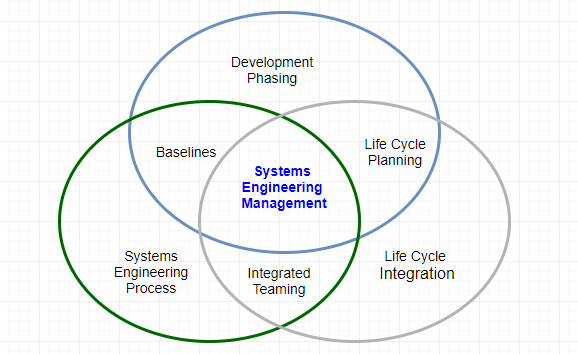
Figure 1. Basic Activities of Systems Engineering Management
A systems engineering process is the heart of systems engineering management which provides a structured way of thinking to solve a design problem and track requirements flow through the design efforts. The systems engineering process is, therefore, an iterative approach which comprises a series of steps to reach a preferred system solution. Commonly, the systems engineering process has,
The systems engineering process includes the concept of operations, system requirements, design, and systems analysis and control (ITE, 2007).
To help each stakeholder understand the software system to develop for PT Matahari,
This software development project to produce a complete and working software application to enable and expand the current business. The software is functioning as the Enterprise Resource Planning (ERP) which integrates entity management, customer management, inventory management, order management, and cash receipt. Figure 2 is the simplified view of the communication structure.
Documents on Cloud, Oracle’s Fusion, E-Business, JD Edwards, and PeopleSoft which are established ERP software in the market (Oracle, 2017).
New software makes the transition of the manual data computation and entry to the system generated computed and its reports.
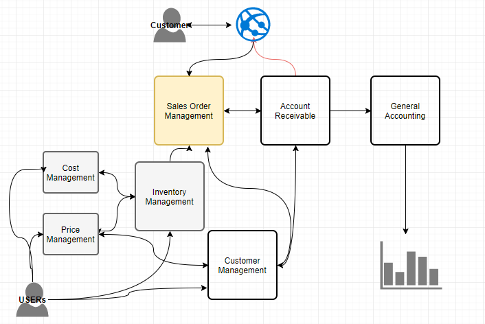
As represented in Figure 3, the primary role of the user is to warranty better customer satisfaction by providing paints and paint products at low price and analytics based on transaction history.
PT Matahari is a small organization so owning all platforms/machines is a costly approach. Hence, it is advisable to run the software to build in the Cloud using Platform as a Service (PaaS) offered by Oracle. This approach gets rid of the workforce for system administration, and software development and maintenance efforts.
This application enables activities as depicted in Figure 4,
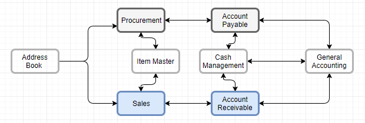
Figure 4. Integration of Subsystems
The new system is running on the Internet through the Cloud service which suits the business for PT Matahari.
Both the Cloud vendor and the software development company are responsible for supporting the software system to develop a clear description of Service Level Agreement (SLA).
The business scenario is identical to the conventional iterative routine in sales order management. Figure 5 entails same.

This development process in SEP identifies the functional requirements which are to be traceable. This step is the representation of the current requirements from PT Matahari. Table 1 describes in detail,
Table 1. Requirement Deployment
| Requirements | Level | No of Users | Meet Criteria |
|---|---|---|---|
| 1. Create database to store all master, control, and transactional data | Necessary | All | Yes |
| 2. Document all communication channels between servers and clients | Necessary | All | Yes |
| 3. User can create customer specific records for Sales Order creation | Clear | Sales | Yes |
| 4. Online availability applications shows real-time on-hand quantity for specific items | Achievable | Sales | Yes |
| 5. User can override the credit limit for business parties | Achievable | Sales | Yes |
| 6. System calculates the promised delivery date based on the users’ request date | Clear | Internal | Yes |
| 7. Sales Order Entry can issue invoice when it is needed | Achievable | Sales | Yes |
| 8. User can check the supply and demand for a specific item | Achievable | Planner | Yes |
| 9. Sales order interfaces the Account Receivable | Clear | All | Yes |
| 10. Sales update posts sales records into general accounting | Clear | All | Yes |
| 12. (continue...) |
Note: The level described as achievable is optional to go-live the software system.
The software to develop is fully integrated with internal systems (e.g., Sales and Account Receivable) which minimize manual maintaining sales records. At this same time, this system provides sufficient interoperability with any defined 3rd party software or language written in Extensible Markup Language (XML).
All documentation of design makes use of the Unified Modeling Language (UML) to generate Activity Diagram, Class Diagram, Communication Diagram, Component Diagram, Integration Overview Diagram, Object Diagram, Package Diagram, Sequence Diagram, and Use Case Diagram.
The plans to control the development process which comprises risk management plan, configuration, and management plan, verification and validation plan, technical review, and requirements traceability.
Risk management is to identify and control risks which are related to the development efforts described above. The industry standard follows, 1) Risk identification, 2) Risk analysis and prioritization, 3) Risk mitigation, and 4) Risk monitoring (Elky, 2006).
This document defines: what to be done, how to be done, who to do, when to be done, and what are required resources (DAU, 2001). This steps identify the baseline outputs, change control procedures and baseline management, and documentation for this planning documents.
The documentation in this steps determines whether the contents of information organized so far are complete and correct.
This step checks whether the project outputs/programs are complete, correct, and accurate through a structured and organized approach. The technical review is crucial steps to move the systems engineering process to the next level.
Table 2. Technical Review Template
| Technical Review | Date | Type | Days |
|---|---|---|---|
| 1. Technical review of Draft Concept of Operations | 11/30/2017 | Web Document | 1 |
| 2. (continue...) |
This list above is accumulative phase by phase.
The life cycle of PT Matahari ERP implementation project follows Conceptual Design, Preliminary Design, Detail Design and Development, Production Construction, and Operational Use and System Operation. One of these iteration makes up a milestone in this software system project (Blanchard & Fabrycky, 2011). This schedule has focused on system engineering process during the conceptual design phase, where Systems Engineering Management Plan (SEMP) commences from preliminary design phase based on the requirement made. The color scheme follows the status and color combination (completed in grey, work in process as yellow, and active/pending activities in green) in Figure 6.

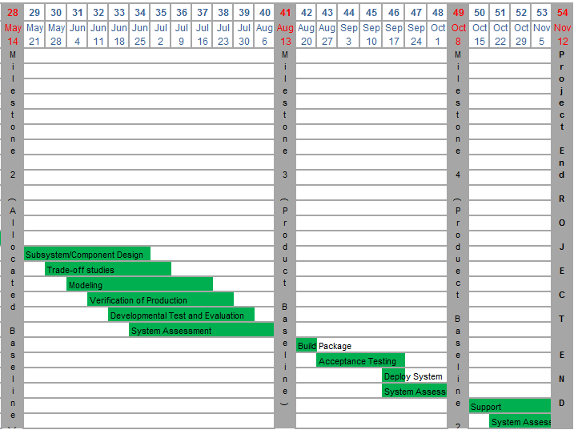
The project organization deals with the human infrastructure of a project which comprises the organization structure for reporting and delegation, roles, responsibility including objectives, and the role to coordinator between different teams (CMU, 2001). Figure 7 depicts the project organization chart. In this figure, business process analyst, implementer, and developer are to be more than one person. Table 3 represents the allocation of task and location in detail.
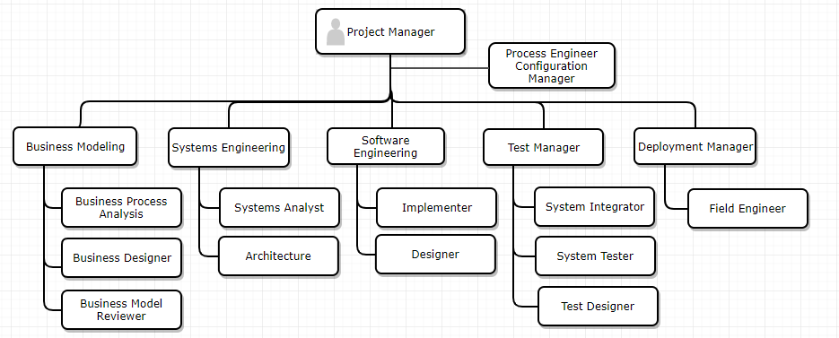
The location of above team and role can be,
Table 3. Role, Allocation, and Location
| Role | Allocation | Location |
|---|---|---|
| Project Manager | 100% | On-site in Malang |
| Business Modeling Team Lead | 100% | Malang |
| Arhcitect | 100% | Malang |
| Others | Flexible | Flexible including remote locations |
Note: In moving into next phase, the allocation of resource needs accommodating (for instance, development manager, Implementer, test with 100% utilization.)
The proper organizational environment must be created that will (1) allow for the successful accomplishment of systems engineering requirements, and (2) facilitate the implementation of these requirements effectively and efficiently.
The systems engineering process comprises the requirement analysis, the functional analysis/allocation, and the design synthesis (DAU, 2001). Table 4 is detail information on the allocation of task and its tools to use.
Table 4. Technical Environments
| What | Team | Tools | |
|---|---|---|---|
| Requirement Analysis |
|
|
UML (Unified Modeling Language) |
| Functional Analysis /Allocation |
|
Systems Engineering | Refer to Figure 11 below |
| Synthesis |
|
Software Engineering | Model /Modelling tools |
Figure 8 represents tools used in the functional analysis (NASA, n.d.).

Figure 8. Functional Analysis and Tool
Figure 9 depicts a decision analysis flow chart, which enables successful implementation of chosen solution (Stecke, 2017).

Figure 9. Decision Analysis Flow Chart
Some of the well-known methodologies to implement the chosen solution entailed here. This section overviews trade studies, control boards, working group, and other forums.
According to NASA, trade studies are decision-making activities to identify the most suitable solution out of a set of proposed solutions. Based on a set of desirable characteristics, potential solutions of a trade study are determined. Trade studies are important when there are more than the possible outcome of input, each course of action need evaluating, and when cost, schedule, and performance analysis are required (Baker & Whalen, 2010).
During software development process, the change control board (CCB) decides which proposed requirement changes and newly added features to accept during the project period. A CCB reviews and approves the changes made against any baseline product on a project (Wiegers, 2013).
Consensus decision making is a dynamic and creative method of reaching agreement among all members of the working group. This method enables each member in the working group to have a full articulation of agreement for the disagreed area and to revisit the issue (National Marins Sanctuaries, n.d.).
Models and its simulated process are very meaningful tools in systems analysis. Initial effort to investigate the target system can shorten the project time with cost-effectiveness comparing with direct manipulation of the system itself (Blanchard & Fabrycky, 2011).
A project for PT Matahari is to develop a light and fully integrated software, the scrum model as an agile methodology suits overall purpose. Since any models are an abstraction of reality, there can be a trade-off versus what level of detail is to be added to this model. As an alternative and comparison purpose which describes valid pros and cons, here review the waterfall model first.
The waterfall model was dominant for a long time because of the simplicity of methodology, which suits when the requirements are stated and known. As depicted in Figure 10, each stage must sign off before next stage starts. The tradeoff of this methodology is that it requires extensive documentation since this is the primary communication source (Canvas Infotech, n.d.).
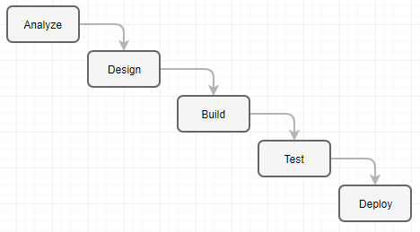
Figure 10. Waterfall Methodology
Since the agile scrum is one of the latest models to overcome the disadvantage of earlier ones (Waterfall model, V model, Incremental Model, Rapid Application Development (RAD) Model, Iterative Model, and Spiral Model), which has strength as below,
Meanwhile, the weakness can be,
Figure 11 describes the iteration of each sprint which is a small cycle of phases reviewed in the waterfall model above.

Model-based Systems Engineering (MBSE) adapts the needs an organization and puts technologic trends into practice. However, the application can be challenging in a real world where time, money, and resources are limited. The purpose of MBSE is to explore alternative models and learn overall routine faster; to support compliance and impact analysis; to generate documentation, and to build a quality model in it (Scaled Agile, 2017).
Systems Engineering Process is one sphere of three activities of Systems Engineering Management, which comprises System Engineering Process, Development Phasing, and Life Cycle Integration. Then the fundamental systems engineering activities comprise requirements analysis, functional analysis, allocation, and design synthesis which technique and tools called System Analysis and Control (DAU, 2001). Figure 12 depicts detail,

Figure 12. Systems Engineering Process
Configuration management allows the logical development of a system, subsystem, or configuration item itself. Hence the integration of different components is most important part of the configuration management tool.
Configuration management tool encompasses the requirement specifications and management, software architecture design, software configuration management, and data management in the system development environment (The Consortium for Ocean Leadership, 2009).
The possible system configuration of PT Matahari can be Oracle Database Appliance (ODA) which is the engineered systems comprises both hardware and software (operating system, database systems, and development tools) in the Cloud, and development tools to build a new software.
The requirement process is the first steps in the system engineering problem-solving processes which comprises requirement analysis, functional analysis and allocation, design synthesis, and verification (DAU, 2001).
The goal and mission of PT Matahari project are to implement a simple, streamlined, easy-to-use software system to minimize inventory cost and increase customers’ satisfaction. The system entails entity management, customer management, inventory management, sales management, which is fully integrated with Account Payable and General Accounting to create meaningful analysis and financial reports.
Functional Analysis and Allocation is a top-down process of representation system level requirements into detailed functional design criteria. Figure 13 depicts same (AcqNotes, n.d.).

Figure 13. Functional Analysis and Allocation
Based on the requirements made by PT Matahari, each module decomposes its components in detail to allocate decomposed components to the functional level. Document it based on the structure of functionality with a proper relational diagram. For instance, starts from Sales Order Entry and collect all information needed, which includes an entity, and inventory, and so forth.
Design synthesis comes into the picture when the functional analysis and allocation completes. Design synthesis is the process derived from the functional analysis and allocation to reach a physical architecture to meet the requirements analysis (AcqNotes, n.d.). Figure 14 Design Synthesis represents the relationship.
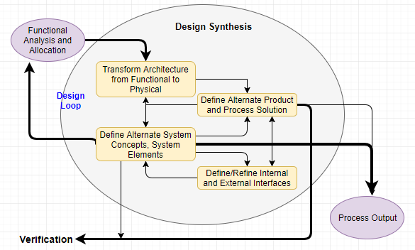
So far, we have reviewed the requirements analysis, system analysis and control, functional analysis allocation, and design synthesis. Now we move to the development process.
The structured approach to develop a system in a project is the development process using waterfall, spiral, and incremental development.
Software development process follows, 1) Planning based on the requirements analysis; 2) Implementation; 3) Testing; and 4) Deployment and Maintenance. Here we are developing a simple version of Enterprise Resource Planning (ERP) for PT Matahari; with all stakeholders must comply.
This project does not cover the development of hardware and hardware development process is beyond this scope.
Along with system integration, system integration is one of the main pillars in the software development process to integrate the multiple components to have successful system-level output. This implementation is the first IT project for PT Matahari to implement useful enterprise solution. Hence, the integration of this project is limited to a system developed.
Build management is the last step of software development process to deploy and maintain the system developed based on proper test and approval by decision makers.

During Systems’ Life Cycle, verification covers the activities for evaluation of progress, efficiency, and effectiveness of systems products and processes. The Same activity is for measurement of specification compliance if needed. System verification is an essential process to confirm that design synthesis resulted in a physical structure.
In building a system, there can be different types of the specification: a system specification (Type A), and the specification for development (Type B), product (Type C), process (Type D), and material (Type E) specifications (Blanchard & Fabrycky, 2011). Figure 16 depicts a simple representation of verification and validation which takes place in a different phase of system life cycle. We are not using v-model for development or system engineering process, but this model gives clear semantics. This approach can be useful because a good process/model remains organized through the system development lifecycle (Mehle, 2017).

Figure 16. Verification and Validation in V-Model
The software specification review for PT Matahari covers the software requirement specification and interface requirements specification to reflect system level requirements. Commonly the validation is done using a model or of its demonstration. Some literature categorizes this as a part of Research and Development (R&D) activity.
Figure 17 gives the scope of validation, stakeholders, and process in the development lifecycle.

Figure 17. Verification, Validation, and Accreditation
It is meaningful to review the revision of Systems Engineering Process in emphasizing technical management processes along with technical processes. Figure 18 and Figure 19 depict the models suggested by DoD in 2008 and 2017 respectively. The latest revision incorporates the relationship between major SE activities and SE process. Figure 18 describes the process leads to DT & E (Development Test & Evaluation), OT & E (Optional Test & Evaluation), and IOC/FOC (Initial Operational Capability / Full Operational Capability).
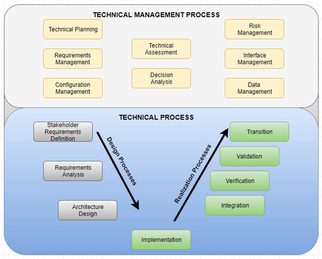
Figure 18. Systems Engineering Process 2008
Figure 19 represents the latest revision of systems engineering process from DoD (DAU, 2017).
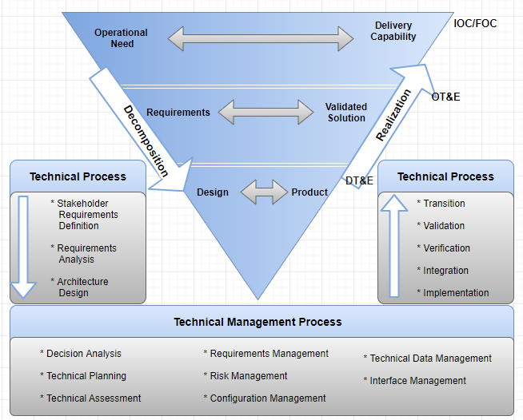
Figure 19. Systems Engineering Process 2014
It is necessary to go through specialty engineering which is for the compliment the technical activities (Keswani, 2015). Specialty engineering comprises performance; reliability, availability, and maintainability (RAM); safety; sustainability; system security; and operability. Here we review some of these specialty engineering activities on reliability, maintainability, safety, and security.
The reliability of a system is an evaluation of the ability of a system to keep operating over time in an expected manner or in varying circumstances to perform its intended mission (Blanchard & Fabrycky, 2011). It is necessary to maintain the reliability through the system life cycle through reliability planning, allocation of reliability allocation, reliability analysis, reliability evaluation, and reliability data collection, the analysis in production environment respectively. The characteristics of the reliable system are how free from deficiency, how the system tolerates error, and how long the system is available. Hence, typically the reliability of a system is measured as its mean time to failure (MTTF) during the expected life of the system.
As the counterpart of reliability to have the system available in designing a system, maintainability is the ability of a system to be maintained about easy, accuracy, safety, and economy (Blanchard & Fabrycky, 2011). The measurement of maintainability is how often (frequency), how much (cost), how ease for both corrective (undergo repairs) and preventive (aptitude to evolve) maintenance (correct, expand, and test). Hence, this quality factor needs considering from conceptual design through system utilization and life-cycle support.
Unlike the hardware system implementation, here we build the software system for PT Matahari. Hence, this activity makes the least impact for this project though this is one of the main principles in the systems engineering. The purpose of safety engineering is to identify hazards to determine whether a certain hazard can be eliminated, or reduced. This hazard includes the potential risk, mitigation effort, and risk acceptance (AcqNotes, n.d.).
Security principle comprises Confidentiality, Integrity, and Availability (CIA), and this activity ensures how to meet these aspects. The factors affect the security can be the interfaces across system and security within a certain module for the software implementation project for PT Matahari. Light Weight Directory Protocol (LDAP) implements tight control of access the business data as depicted in figure 20,

Figure 20. LDAP for PT Matahari
On the other hand, to control overall access to the network Single Sign-On (SSO) authentication is to be used as shown below figure 20 (Peyrott, 2015). Note that figure 21 has assumed that there are two domains and the authentication for domain 2 repeats the routine from 1 through 7.
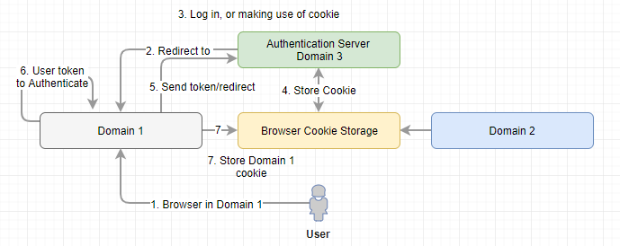
System life-cycle engineering includes life cycle functions development, deployment, production, verification, training, operation, support, and disposal (Blanchard & Fabrycky, 2011). Figure 22 depicts the life cycle of the system.
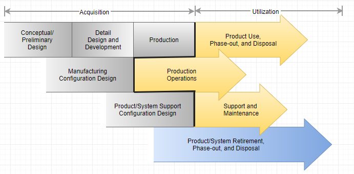
Figure 22. Life cycles of the System
Initially exiting enterprise solutions in the market is too costly to own, which is the objective of the software implementation. However, it is expensive to buy multiple servers (deployment server, logic server, and database server). Hence Infrastructure as a service (IaaS) is a viable option for PT Matahari. The Cloud as IaaS benefits minimum IT personnel, the cloud vendor is responsible for all CIA characteristics of security and network, dynamic scaling by paying per use, reduce Total Cost of Ownership (CTO), and green IT.
Figure 23 depicts the development and deployment activities based on the installation.

Figure 23. Installation and Deployment
All servers are sitting in the cloud, and each server has implemented to meet different expectation as below,
System checkout is to transit the system from development phase to operations and maintenance (Q&M) phase in system life cycle. Now the software is installed in the operational environment in the Cloud, which moved the developed objects from the development team to PT Matahari who own and operate it.
User training contains the activities which are essential to achieve and maintain the knowledge and skill levels necessary to effectively and efficiently perform operations and support functions.
Support includes the necessary activities to provide operations support, maintenance, logistics, and material management. So it is essential to train support engineer with sufficient knowledge and information on the product in operations.
In a supply chain, multiple entities may involve for both operation of the system and its maintenance as depicted Figure 24 below. Both activities involve material, information, and money (Blanchard & Fabrycky, 2011).

Figure 24. Logistic Activity Flow
The requirement for maintaining the system can be fixing a certain problem (corrective maintenance) in a system or enhance/add new functionality (adaptive maintenance) in the system. And this maintenance can be extended to preventive maintenance and perfective maintenance when the system gets matured. Most of the software vendors follow the standard support mechanism for maintenance of the system. Some call it the diagnostic methodology which is a common way to support system for maintenance. Figure 25 depicts the standard post-delivery stage process for software system maintenance process.
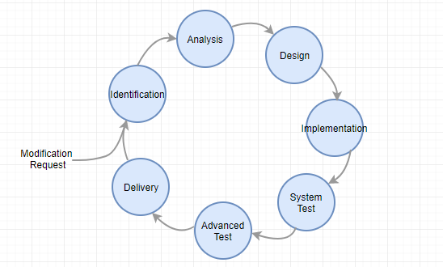
Figure 25. Maintenance Process
Figure 24 above describes logistic considerations in supply chain view. The logic support is not critical for this project because we deal with software system implementation.
Disposability is one of main consideration during the design phase of software system implementation project to meet the expectation on green engineering. Disposal/decommissioning of software need following proper policy. Since PT Matahari deals with software system, this implementation is due in 10 years where disposal includes disposal, clearance, and retirement/decommission of system.
AcqNotes. (n.d.). JCIDS Process. Systems Engineering Plan (SEP). Retrieved November 16, 2017, from http://acqnotes.com/acqnote/careerfields/functional-analysis-and-allocation
AcqNotes. (n.d.). JCIDS Process. Systems Engineering Plan (SEP). Retrieved November 16, 2017, from http://acqnotes.com/acqnote/careerfields/design-synthesis
AcqNotes. (n.d.). Systems Engineering Management Plan (SEMP). Retrieved November 27, 2017, from http://acqnotes.com/acqnote/careerfields/systems-engineering-management-plan-semp
AcqNotes. (n.d.). System Safety Engineering. Retrieved December 10, 2017, from http://acqnotes.com/acqnote/careerfields/system-safety-engineering
Adell, L. (2013). Benefits & Pitfalls of using Scrum software development methodology. Retrieved November 23, 2017, from http://www.belatrixsf.com/blog/benefits-pitfalls-of-using-scrum-software-development-methodology/
Baker, J. P. & Whalen, J. T. (2010). Survey of Trade Study Methods for Practical Decision-Making. Retrieved December 4, 2017, from https://www.nasa.gov/sites/default/files/survey_of_trade_study_methods_-_baker.pdf
Blanchard, B. S., & Fabrycky, W. J. (2011). Systems engineering and analysis. Upper Saddle River: Pearson/Prentice Hall.
Canvas Infotech. (n.d.). Agile Scrum Methodology vs. Waterfall Methodology. Retrieved November 24, 2017, from https://www.canvasinfotech.com/change-management/agile-scrum-methodology-vs-waterfall-methodology/
CMU. (2001). Project Organization. Retrieved December 4, 2017, from https://www.sei.cmu.edu/intro/process/template/t_intro/pd_138.htm
DAU. (2017). Systems Engineering Process. Retrieved December 6, 2017, from https://www.dau.mil/acquipedia/Pages/ArticleDetails.aspx?aid=9c591ad6-8f69-49dd-a61d-4096e7b3086c
Elky, S. (2006). An Introduction to Information System Risk Management. SANS Technology Institute. Bethesda, MD. Retrieved April 28, 2017, from https://www.sans.org/reading-room/whitepapers/auditing/introduction-information-system-risk-management-1204
ITE Library. (2007). System Engineering Management Plan for Traffic Management Data Dictionary and Message Sets for External Traffic Management Center Communications (TMDD MS/ETMCC), Version 3.0. Retrieved November 28, 2017, the downloadable Microsoft word document from library.ite.org/pub/e28147b5-2354-d714-5141-a649eb30f140 for The Institute of Transportation Engineer.
Keswani, M. (2015). Specialty Engineering. Retrieved December 10, 2017, from https://www.incose.org/docs/default-source/TWG-Documents/005-specialty-engineering-and-se-pamphlet.pdf?sfvrsn=4&sfvrsn=4
Mehle, M. E. (2017). Particle Accelerators as Medical Devices. Retrieved December 5, 2017, from https://www.linkedin.com/pulse/particle-accelerators-medical-devices-marcos-e-mehle
Defense Acquisition University (DAU). (2001). Systems Engineering Fundamentals. Retrieved November 20, 2017, from https://ocw.mit.edu/courses/aeronautics-and-astronautics/16-885j-aircraft-systems-engineering-fall-2005/readings/sefguide_01_01.pdf
NASA. (n.d.). Functional Analysis Module, Space Systems Engineering, version 1.0. Retrieved December 4, 2017, from https://kscddms.ksc.nasa.gov/Reliability/Documents/Functional_Analysis_Module_V10.pdf
National Marines Sanctuaries. (n.d.). Joint Management Plan Review – Working Group Consensus Based Decision Making. Retrieved December 4, 2017, from https://nmssanctuaries.blob.core.windows.net/sanctuaries-prod/media/archive/jointplan/mb_docs/mb_consensus.pdf
Oracle. (2017). Application Documentation. Retrieved November 29, 2017, from https://docs.oracle.com/en/applications/
Peyrott, S. (2015). What is and how does Single Sign-On Authentication work? Retrieved December 10, 2017, from https://auth0.com/blog/what-is-and-how-does-single-sign-on-work/
Scaled Agile. (2017). Model-based Systems Engineering. Retrieved November 23, 2017, from http://www.scaledagileframework.com/model-based-systems-engineering/
Stecke, K. E. (2017). Using Mathematics to Solve Some Problems in. Retrieved December 4, 2017, from https://www.researchgate.net/publication/237478229_Using_Mathematics_to_Solve_Some_Problems_in
The Consortium for Ocean Leadership. (2009). Ocean Observatories Initiative. Systems Engineering Management Plan. Retrieved November 16, 2017, from http://oceanleadership.org/wp-content/uploads/2009/02/1100-00000_SEMP_OOI_ver_3-12_Pub.pdf
Wiegers, K. (2013). The Change Control Board. Retrieved December 4, 2017, from https://www.jamasoftware.com/blog/the-change-control-board/